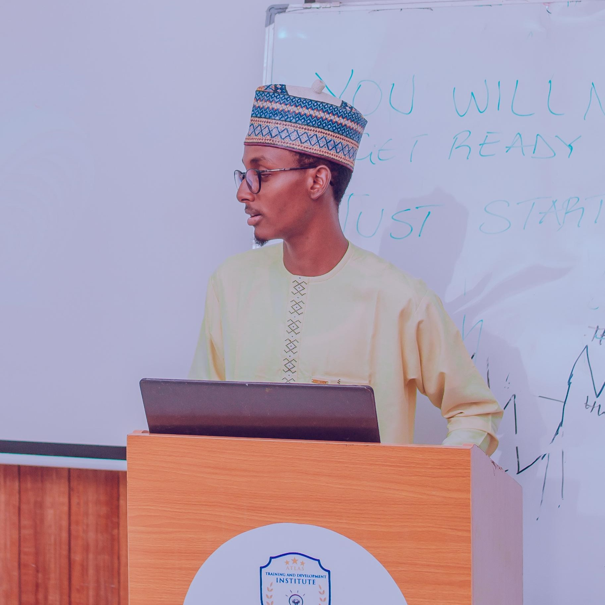

The visionary leader who founded ODPM Nigeria with a dream to create lasting positive change across Nigeria.

10+
Years of Leadership
Umar Bello Galadima is the visionary founder and president of ODPM Nigeria. With over 10 years of experience in political activism, community development, and social work, Umar has dedicated his life to empowering young Nigerians and creating positive change across the country.
His journey began as a young activist in Kano State, where he witnessed firsthand the challenges facing Nigerian communities. This experience ignited his passion for social change and led to the establishment of ODPM Nigeria in 2015.
Bsc Biotechnology
Federal University Dutse
10+ Years
Leadership & Activism
"I envision a Nigeria where every young person has the opportunity to contribute meaningfully to society, where communities are self-sufficient and inclusive, and where political participation leads to positive change for all citizens."
"To create a platform where young Nigerians can unite, collaborate, and drive sustainable development through community engagement, humanitarian service, and active political participation."
"The future of Nigeria lies in the hands of our youth. We must empower them to be agents of positive change, not just beneficiaries of development, but active participants in shaping our nation'\''s destiny."
- Umar Bello Galadima, Founder & President
Under Umar's leadership, ODPM Nigeria has achieved remarkable milestones and received recognition for its impactful work across Nigeria.
1500+
Communities across Nigeria have benefited from ODPM'\''s programs
1000+
Individuals have been directly impacted by our initiatives
50+
Ongoing projects creating sustainable change
Umar Bello Galadima is always open to connecting with fellow changemakers, potential partners, and individuals who share his vision for a better Nigeria.